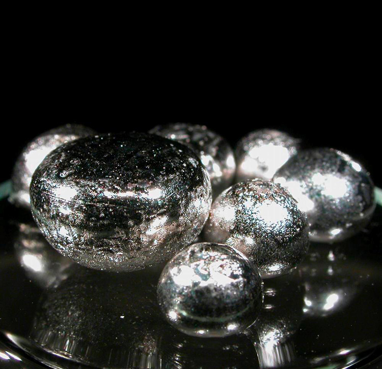
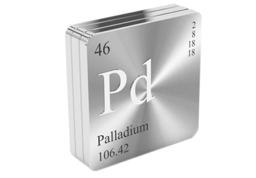
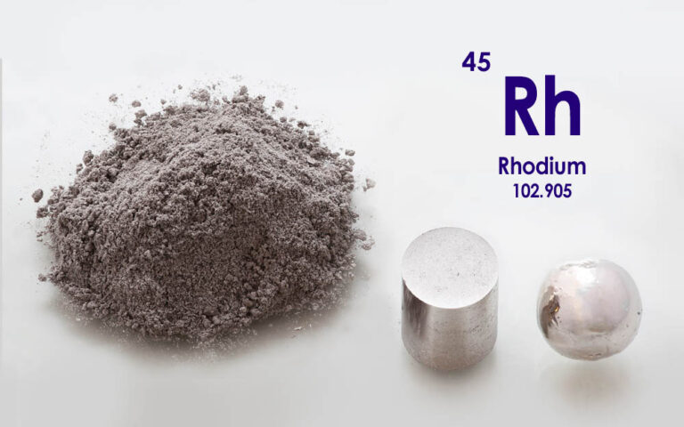

Родий

Ро́дий (химический символ — Rh; лат. Rhodium) — химический элемент 9-й группы (переходный металл, по устаревшей классификации — побочной подгруппы восьмой группы, VIIIB), пятого периода периодической системы химических элементов Д. И. Менделеева, с атомным номером 45.

Открыт У. Х. Волластоном в 1803 г. (по другим данным, в 1804) при исследовании самородной платины; название «родий» получил вследствие розово-красной окраски водных растворов солей (от греч. ῥόδον – роза).
Родий производят из сухих остатков после извлечения Ag, Au, Pt и Pd. Эти остатки сплавляют с NaHSO4, сплав выщелачивают водой, получая раствор Rh2(SO4)3; действием NaOH осаждают Rh(OH)3, который растворяют в HCl; из хлоридного раствора добавлением NaNO2 и NH4Cl осаждают (NH4)3[Rh(NO2)6], его вновь растворяют в НСl и выпаривают раствор, получая чистый (NH4)3[RhCl6]. Восстановление водородом даёт чистый металлический родий. По другому способу хлоридные комплексы родия переводят в Na3[Rh(NO2)6] и затем осаждают (NH4)2Na[Rh(NO2)6], который растворяют в HCl и восстанавливают родий муравьиной кислотой до родиевой черни. Чернь в атмосфере Н2 при 1000 °С переводят в макропористый материал (металлический порошок родия в спечённом состоянии) – родиевую губку. Объём мирового производства родия 25 т (2019).

Родий используют в качестве компонента катализаторов (в основном дожигания выхлопных газов автомобилей), для изготовления термопар, тиглей для производства оптического стекла и монокристаллов, фильер для формования волокон, покрытий технических зеркал. В виде добавки к сплавам Pt и Pd или тонкого покрытия родия придаёт повышенную твёрдость ювелирным украшениям.